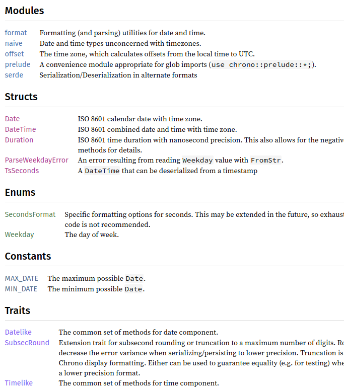

Rust 模块和文件 - [译]
原文链接：amos.me - Rust modules vs files
不久前，我在推特上发起了 Rust 有什么让人困惑的 话题，热度最高的主题是“模块系统是怎么映射到文件的？”。
我记得刚接触 Rust 时模块让我痛苦挣扎，所以我尝试用一种我认为说得通的方式解释它。
要点
以下所述均使用 Rust 2018 版本。我没有兴趣学习（或教授）老版本的细节，特别是因为老版本让我更加困惑。
如果你有现存的项目，你可以查看 Cargo.toml 文件中的 edtion 查看项目使用的 Rust 版本。
如果没有，那现在就加上 edition = 2018。
如果使用最新的 Rust 且通过 cargo new/ cargo init 来创建新项目，新项目会自动选择 2018 版本。
什么是 crate
一个 crate 通常来说是一个项目。它有一个 Cargo.toml 文件，这个文件用于声明依赖，入口，构建选项等项目元数据。
每个 crate 可以独立地在 https://crates.io/ 上发表。
假设我们要创建一个二进制（可执行）项目：
cargo new --bin（或者在已有项目上用cargo init --bin）会为新 crate 生成一个Cargo.toml文件。- 项目入口为
src/main.rs
对于二进制项目，src/main.rs 是项目主模块的常用路径。它不一定是精确的路径,可以在 Cargo.toml 添加相应配置 1，使编译器在别处查看(甚至可以有多个目标二进制文件和多个目标库)。
默认情况下，我们的可执行项目的 src/main.rs 如下：
fn main() { println!("Hello world!"); }
我们可以通过 cargo run 构建和运行这个项目，若只想构建项目，则运行 cargo build
构建一个 crate 的时候，cargo 下载并编译所有所需依赖，默认情况下把临时文件和最终生成文件放入 ./target/ 目录下。
cargo 既是包管理器又是构建系统。
crate 依赖
让我们向刚才创建的 crate 添加 rand 依赖来看看命名空间是怎么工作的。我们需要修改 Cargo.toml，其内容如下：
[package]
name = "modules"
version = "0.1.0"
edition = "2018"
[dependencies]
rand = "0.7.0"
如果我们想学习如何使用 rand crate，有以下几种方式：
- rand 的 crates.io.page - 上面通常包含了一个类似 README 文件，包含了简要描述和一些代码示例
- rand 的 文档（在 crates.io 页面标题或最新版本下有链接）。需要注意的是所有发表在 crates.io 的 crate 会在 https://docs.rs 上生成文件 - 我不确定为什么 rand 也文档部署在它自己的网页，或许它早于 docs.rs？
- 它的 源码页，如果其他方式（如 crates.io 的链接和自动生成的文档）失败了的化
现在让我们在 src/main.rs 里使用 rand, src/main.rs 如下：
fn main() { let random_boolean = rand::random(); println!("You {}!", if random_boolean { "win" } else { "lose" }); }
请注意：
- 我们不需要使用
use指令来使用rand- 它在项目下的文件全局可用，因为它在Cargo.toml中被声明为依赖（rust 2018之前的版本则不是这样） - 我们完全没必要使用
mod（稍后讲述）
为了明白这篇博客的余下部分，你需要明白 rust 模块仅仅是命名空间 - 他们让你把相关符号组合在一起并保证可见性规则。
- 我们的 crate 有一个主模块（我们现在所在），它的源在
src/main.rs randcrate 也有一个入口。因为他是一个库，默认情况下其主入口为src/lib.rs- 在我们主模块范围，我们可以在主模块通过依赖名称使用依赖
总之，我们现在只处理两个模块：我们项目主入口还有 rand 的入口。
use 指令
如果我们不喜欢一直这样写 rand::random()，我们可以把 random 注入主模块范围。
use rand::random; // 我们可以通过 `rand::random()` 或 `random()` 来使用它 fn main() { if random() && random() { println!("You won twice in a row!"); } else { println!("Try again..."); } }
我们也可以使用通配符来导入 rand 主模块导出的所有符号。
// 这会导入 random，还有 thead_rng 等 use rand::*; fn main() { if random() { panic!("Unlucky coin toss"); } println!("Hello world"); }
模块不需要在分开的文件里
正如刚才所见，模块是一个让你组合相关符号的语言结构。
你不需要把他们放在不同的文件下。
让我们修改下 src/main.rs 来证明这个观点：
mod math { pub fn add(x: i32, y: i32) -> i32 { x + y } // 使用 `pub` 来导出 `add()` 函数 // 如果不这样做，`add()` 会变为 `math` 模块的私有函数 // 我们将无法在 `math` 模块外使用它 } fn main() { let result = math::add(1, 2); println!("1 + 2 = {}", result); }
从范围角度，我们项目结构如下：
我们 crate 的主模块
`math`: 我们的 `math` 模块
`rand`: `rand` crate 的主模块
从文件角度，主模块和 math 模块都在同一个文件 src/main.rs 下。
模块可以在可分开的文件中
现在，如果我们如下修改项目：
src/math.rs
#![allow(unused)] fn main() { pub fn add(x: i32, y: i32) -> i32 { x + y } }
src/main.rs
fn main() { let result = math::add(1, 2); println!("1 + 2 = {}", result); }
然而这行不通。
Compiling modules v0.1.0 (/home/amos/Dev/modules)
error[E0433]: failed to resolve: use of undeclared type or module `math`
--> src/main.rs:2:18
|
2 | let result = math::add(1, 2);
| ^^^^ use of undeclared type or module `math`
error: aborting due to previous error
For more information about this error, try `rustc --explain E0433`.
error: Could not compile `modules`.
To learn more, run the command again with --verbose.
虽然 src/main.rs 和 src/lib.rs（二进制和库项目）会被 cargo 自动识别为程序入口，其他文件则需要在文件中明确声明。
我们的错误在于仅仅创建了 src/math.rs 文件，希望 cargo 会在构建时找到它，但事实上并不是这样的。cargo 甚至不会解析它。
cargo check 命令也不会报错，因为 src/math.rs 现在还不是 crate 源文件的一部分。
为了改正这个错误，可以如下修改 src/main.rs（因为它时项目入口，这是 cargo 已知的）:
mod math { include!("math.rs"); } // 注意: 这不是符合 rust 风格的写法，仅作 mod 学习用 fn main() { let result = math::add(1, 2); println!("1 + 2 = {}", result); }
现在 crate 可以编译和运行了，因为：
- 我们定义了一个名为
math的模块 - 我们告诉编译器复制/粘贴其他文件（
math.rs）到模块代码块中- 参考 include! 文档
但这不是通常导入模块的方式。按照惯例，如果使用不跟随代码块的 mod 指令，效果上述一样。
所以也可以这样写：
mod math; fn main() { let result = math::add(1, 2); println!("1 + 2 = {}", result); }
就是这么简单。但容易混淆之处在于，根据 mod 之后是否有代码块，它可以内联定义模块，或者导入其他文件。
这也解释了为什么在 src/math.rs 里不用再定义另一个 mod math {}。因为 src/math.rs 已经在
src/main.rs 中导入，它已经说 src/math.rs 的代码存在于一个名为 math 的模块中。
那 use 呢
现在我们几乎了解了 mod，那 use 呢？
use 的唯一目的是将符号带入命名空间，让符号使用更加简短。
特别是，use 永远不会告诉编译器去编译 mod 导入文件之外的其他文件。
在 main.rs/math.rs 例子中，在 src/main.rs 写下如下语句时：
#![allow(unused)] fn main() { mod math; }
我们在主模块导入一个名为 math 模块，这个模块导出 add 函数。
从范围角度，结构如下：
crate 主模块(我们在这儿)
`math` 模块
`add` 函数
这就是为什么我们要使用 add 函数时要这样引用 math::add，即从主模块到 add 函数的正确路径。
请注意，如果我们从另一个模块调用 add，那么 math::add 可能不是有效路径。
然而，add 有一个更长的添加路径，即 crate::math::add - 它在我们的 crate 中的任何位置都有效（只要 math 模块保持原样）。
所以，如果我们不想每次都使用 math:: 前缀调用 add，可以用 use 指令：
mod math; use math::add; fn main() { // 看，没有前缀了！ let result = add(1, 2); println!("1 + 2 = {}", result); }
那 mod.rs 又是什么呢？
好吧，我说谎了 - 我们还没完全了解 mod。
目前，crate 有一个漂亮又扁平的文件结构：
src/
main.rs
math.rs
这是有道理的，因为 math 是一个小模块（只有一个函数），它并不需要拥有自己的文件夹。但我们也可以这样改变它的结构：
src/
main.rs
math/
mod.rs
（对于那些熟悉 node.js 的人来说，mod.rs 类似于 index.js）。
就命名空间/范围而言，两种结构都是等价的。我们的新 src/math/mod.rs 与src/math.rs具有完全相同的内容，
并且我们的 src/main.rs 完全不变。
事实上，如果如果我们定义了 math 模块的子模块， folder/mod.rs 结构更加易于理解。
假设我们想添加一个 sub 函数，因为我们强制执行“一个函数一个文件”的限制，我们希望 add 和 sub 存在于各自的模块中。
我们现在的文件结构如下：
src/
main.rs
math/
mod.rs
add.rs (新文件!)
sub.rs (也是新文件!)
概念上而言，命名空间树如下：
crate (src/main.rs)
`math` 模块 (src/math/mod.rs)
`add` 模块 (src/math/add.rs)
`sub` 模块 (src/math/sub.rs)
我们的 src/main.rs 不需要做很大改动 - math 仍在相同位置。我们只是让它使用 add 和 sub：
// 保证 math 在 `./math.rs` 或 `./math/mod.rs` 中定义 mod math; // 将两个符号带入范围，在 `math` 模块中保证都已导出 use math::{add, sub}; fn main() { let result = add(1, 2); println!("1 + 2 = {}", result); }
我们的 src/math/add.rs 正如我们在 math 模块做的一样：定义一个函数，并用 pub 将其导出。
#![allow(unused)] fn main() { pub fn add(x: i32, y: i32) -> i32 { x + y } }
类似地，src/math/sub.rs 文件如下：
#![allow(unused)] fn main() { pub fn sub(x: i32, y: i32) -> i32 { x - y } }
现在来看 src/math/mod.rs。我们知道 cargo 知道 math 这个模块存在，
因为 src/main.rs 中的 mod math; 语句已将其导入。
但我们需要让 cargo 也知道 add 和 sub 模块。
所以我们需要在 src/math/mod.rs 添加如下语句；
#![allow(unused)] fn main() { mod add; mod sub; }
现在 cargo 知晓所有源文件。
crate 能编译成功吗？（剧透一下：没有哦）
Compiling modules v0.1.0 (/home/amos/Dev/modules)
error[E0603]: module `add` is private
--> src/main.rs:2:12
|
2 | use math::{add, sub};
| ^^^
error[E0603]: module `sub` is private
--> src/main.rs:2:17
|
2 | use math::{add, sub};
| ^^^
发生了什么？好吧，按现在的写法，主模块看起来是这样的：
crate (我们在这儿)
`math` 模块
（空的）
所以 math::add 不是一个有效路径，因为 math 模块没有导出任何东西。
好吧，我猜我们可以直接在 mod 前加上 pub？
将 src/math/mod.rs 做如下修改：
#![allow(unused)] fn main() { pub mod add; pub mod sub; }
又一次，编译不通过：
Compiling modules v0.1.0 (/home/amos/Dev/modules)
error[E0423]: expected function, found module `add`
--> src/main.rs:5:18
|
5 | let result = add(1, 2);
| ^^^ not a function
help: possible better candidate is found in another module, you can import it into scope
|
2 | use crate::math::add::add;
|
rustc 给出了明确的信息 - 现在我们公开了 add 和 sub 模块，我们的 crate 模块结构如下：
crate (我们在这)
`math` 模块
`add` 模块
`add` 函数
`sub` 模块
`sub` 函数
但这和期望略有差距。math 的两个子模块组成涉及实现细节。我们并不希望导出这两个模块 - 我们也不希望任何人直接导入这两个模块！
所以回到声明和导入子模块的地方，让这两个模块变为私有，然后分别重新导出它们的 add 和 sub 函数。
#![allow(unused)] fn main() { // 子模块是私有的 mod add; mod sub; // 这些是重导出函数 pub use add::add; pub use sub::sub; }
这样改变后，从 src/math/mod.rs 角度看，模块结构如下：
#![allow(unused)] fn main() { `math` 模块（我们在这） `add` 函数（公开） `sub` 函数（公开） `add` 模块（私有） `add` 函数（公开） `sub` 模块（私有） `sub` 函数（公开） }
然而，从 src/main.rs 角度看，模块结构如下：
crate （你在这）
`math` 模块
`add` 模块
`sub` 模块
我们已经成功隐藏 math 模块的实现细节 - 只有 add 和 sub 函数被导出。
果然，现在 crate 编译成功且运行良好。
回顾
回顾一下，这是目前完整的文件。
src/main.rs
mod math; use math::{add, sub}; fn main() { let result = add(1, 2); println!("1 + 2 = {}", result); }
src/math/mod.rs
#![allow(unused)] fn main() { mod add; mod sub; pub use add::add; pub use sub::sub; }
src/math/add.rs
#![allow(unused)] fn main() { pub fn add(x: i32, y: i32) -> i32 { x + y } }
src/math/sub.rs
#![allow(unused)] fn main() { pub fn sub(x: i32, y: i32) -> i32 { x - y } }
未使用的导入和符号
如果你用编辑器跟随写到现在，你会注意到 rustc（rust 编译器，由 cargo 调用）抛出一个 warning:
warning: unused import: `sub`
--> src/main.rs:2:17
|
2 | use math::{add, sub};
| ^^^
|
= note: #[warn(unused_imports)] on by default
的确，现在我们没有在主函数使用 sub。如果我们像下面那样在 use 指令中把它去掉会怎样？
mod math; use math::add; fn main() { let result = add(1, 2); println!("1 + 2 = {}", result); }
现在 rust 又抛出了错误：
#![allow(unused)] fn main() { warning: function is never used: `sub` --> src/math/sub.rs:1:1 | 1 | pub fn sub(x: i32, y: i32) -> i32 { | ^^^^^^^^^^^^^^^^^^^^^^^^^^^^^^^^^ | = note: #[warn(dead_code)] on by default }
解释非常简单。目前在 crate 中，sub 没有在其他地方导出。它在 src/math/sub.rs 中定义，
由 src/math/mod.rs 重新导出。math 模块在且仅在 src/main.rs 可用 - 但我们没有在主模块中使用它。
所以我们让编译器去解析一个源文件，进行类型检查和所有权检查 - 但 sub 函数在最后的可执行文件并没有出现。即使我们想把
crate 作为一个库，sub 函数依然不可用，因为它并没有在程序入口导出。
我们有几个选项。如果想让 crate 既是一个可执行项目和库，仅需让 math 模块变为公开就可以了。
在 src/lib.rs 里：
#![allow(unused)] fn main() { // 现在不必使用 `math` 模块里的所有符号， // 因为我们让他们对所有依赖可见。 pub mod math; }
或者，我们可以去掉 sub 函数（毕竟我们没有它）。如果我们知道之后将会使用它，可以对某个函数关闭 warning：
在 src/math/sub.rs 中：
#![allow(unused)] fn main() { // 这不是好主意 #[allow(unused)] pub fn sub(x: i32, y: i32) -> i32 { x - y } }
但我真的推荐这样做。一旦添加这个注解很容易忘掉死代码。记住，寻找 unused 是很难的。
这是源码控制该干的。但如果你想要，它仍是一个选择。
但这确实回答了一个你可能一直在问自己的问题：“仅仅 use 我真正需要的东西是不是更好，所以剩下的不会被编译/包含在最终的二进制文件中吗？”。 答案是：没关系。
使用通配符导入符号（如 use::some_crate::*;）的唯一害处是污染命名空间。但编译器还是会解析所有源文件，把没有使用的部分去掉（通过消灭死代码），不管命名空间有什么。
父模块
目前我们仅使用了那些命名空间/符号树深处的符号。
但如果需要，我们也可以使用父级命名空间里。
假设我们希望 math 模块有一个模块级的常量来开启或关闭日志。
（注意，这样控制日志是一个糟糕的做法，我只是暂时想不到其他愚蠢的例子）。
现在将 src/math/mod.rs 做如下修改：
#![allow(unused)] fn main() { mod add; mod sub; pub use add::add; pub use sub::sub; const DEBUG: bool = true; }
然后我们可以在其他模块引用 DEBUG，比如 src/math/add.rs：
#![allow(unused)] fn main() { pub fn add(x: i32, y: i32) -> i32 { if super::DEBUG { println!("add({}, {})", x, y); } x + y } }
意料之中，编译通过且成功运行：
$ cargo run
Finished dev [unoptimized + debuginfo] target(s) in 0.03s
Running `target/debug/modules`
add(1, 2)
1 + 2 = 3
注意：一个模块总是可以访问其父级作用域（通过 super::）- 即便是是父级作用域的私有变量、私有函数等。
DEBUG 是私有的，但我们可以在 add 模块中使用它。
如果我们要定义rust关键字和文件路径惯用语之间的对应关系，我们可以映射：
crate::foo对/foo- 如果我们认为“根文件系统”为包含main.rs或lib.rs的目录super::foo对../fooself::foo对./foo
什么时候会需要使用 self 呢？
好吧，对于 src/math/mod.rs 如下两行：
#![allow(unused)] fn main() { pub use add::add; pub use sub::sub; }
我们可以用单行代码实现：
#![allow(unused)] fn main() { pub use self::{add:add, sub::sub}; }
假设子模块只导出了我们希望使用的符号，我们甚至可以使用通配符：
#![allow(unused)] fn main() { pub use self::{add::*, sub::*}; }
同级模块
好吧，同级模块（如 add 和 sub）之间没有直接访问的路径。
如果想在 add 中重新定义 sub，我们在 src/math/sub.rs 不能这样做：
#![allow(unused)] fn main() { // 编译不通过 pub fn sub(x: i32, y: i32) -> i32 { add::add(x, -y) } }
add 和 sub 共享父级模块，但不意味他们共享命名空间。
我们也绝对不应该使用第二个 mod。 add 模块已存在于模块层次结构中的某个位置。
除此之外 - 因为它是 sub 的子模块，它要么存在于 src/math/sub/add.rs 或 src/math/sub/add/mod.rs
中 - 这两者都没有意义。
如果我们想访问 add， 必须通过父级模块，就像其他人一样。在 src/math/sub.rs 中：
#![allow(unused)] fn main() { pub fn sub(x: i32, y: i32) -> i32 { super::add::add(x, -y) } }
或者使用 src/math/mod.rs 重新导出的 add：
#![allow(unused)] fn main() { pub fn sub(x: i32, y: i32) -> i32 { super::add(x, -y) } }
或者简单地导入 add 模块下的所有东西：
#![allow(unused)] fn main() { pub fn sub(x: i32, y: i32) -> i32 { use super::add::*; add(x, -y) } }
请注意，函数有它自己的作用域，所以 use 不会影响这个模块其他地方。
你甚至可以用 {} 限制作用域！
#![allow(unused)] fn main() { pub fn sub(x: i32, y: i32) -> i32 { let add = "something else"; let res = { // 在这个代码块中，`add` 是 `add` 模块导出的函数 use super::add::*; add(x, -y) }; // 现在我们离开代码块，`add` 又变为 "something else" res } }
preclude 模式
随着 crate 变得复杂，模块层次也更复杂。除了从 crate 入口导出所有东西，
一些 crate 选择一下最常用的符号并在 prelude 中导出他们。
chrono 就是一个好例子。
查看它在 https://docs.rs 上的文档，它的主入口导出如下东西：

所以如果这样写：
#![allow(unused)] fn main() { use chrono::*; }
将会在作用域内导入 serde，这会遮盖 serde crate。
这也是为什么 chrono 使用 preclude 模块，这个模块只导出如下内容：
结论
我希望这些能澄清 rust 的模块和文件，如果有任何疑问，请在 Twitter上告诉我。感谢阅读！
具体配置参考 Cargo教程
Github 博客地址：Rust 模块与文件
知乎专栏：夜雨秋灯录 - Rust模块与文件
LearnKu 社区文章: Rust 模块与文件